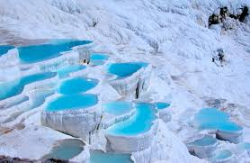

La Mezquita Azul

La Mezquita Azul, también conocida como la Mezquita del Sultán Ahmed, es una de las principales mezquitas de Estambul. Construida en el siglo XVII durante el reinado del sultán Ahmed I, la mezquita es famosa por sus impresionantes azulejos de color azul que adornan su interior, así como por sus seis minaretes. Los visitantes pueden admirar la magnífica arquitectura otomana y experimentar la serenidad de este lugar de culto.
Santa Sofía

Santa Sofía, también conocida como Ayasofya, es un impresionante edificio histórico ubicado en Estambul. Construida en el siglo VI como iglesia bizantina, más tarde se convirtió en mezquita durante el período otomano y ahora funciona como museo. Con su enorme cúpula y mosaicos históricos, Santa Sofía es una joya arquitectónica que refleja la rica historia y cultura de Turquía.
Pamukkale
Pamukkale, que significa "castillo de algodón" en turco, es un sitio natural único en la provincia de Denizli. Conocido por sus terrazas de travertino blancas y aguas termales, Pamukkale es un destino popular para aquellos que buscan relajarse y rejuvenecer. Los visitantes pueden bañarse en las piscinas termales y explorar las antiguas ruinas de Hierápolis, una ciudad romana construida sobre el mismo sitio.